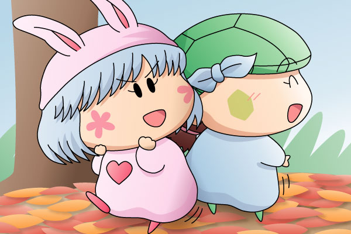

<!doctype html>
<html><!-- #BeginTemplate "/Templates/picture.dwt" --><!-- DW6 -->
<head>
<meta charset="utf-8">
<meta name="viewport" content="width=700">
<!-- #BeginEditable "doctitle" -->
<title>ムルモ屋本舗：絵：パピィ＆カメリ(1)/title>
<!-- #EndEditable -->
<link rel="SHORTCUT ICON" href="/murumo.ico">
<link href="/import/contents.css" rel="stylesheet" type="text/css">
<!-- #BeginEditable "head" -->
<!-- #EndEditable -->
<!--[if lt IE 9]>
<script src="/import/html5shiv-printshiv.js"></script>
<![endif]-->
</head>

<body>
<div id="wrapper">
<header>
<div id="title">
<h1> <!-- #BeginEditable "title" -->
									パピィ＆カメリ(1) 
								<!-- #EndEditable --> </h1>
</div>
<nav>
<div id="topButton">
<a href="/index.html"></a>
</div>
</nav>
</header>
<div class="clearfix"></div>

<div id="subheader"><!-- #BeginEditable "subheader" -->
<!-- #EndEditable -->
</div>

<article>
<!-- #BeginEditable "article" -->
									<div align="center">
										<p><a href="rirumu01.html"><br>
											</a></p>
									</div>
									<div align="left">
									<p>　<font color="#e391bc"><b>パピィ</b></font>「寒いときはこれに限るわね！」<br>
										　<font color="#1e7f47"><b>カメリ</b></font>「パ～ピィちゃん～、もっとゆっくりやろうよ～～」<br>
										　<font color="#e391bc"><b>パピィ</b></font>「ゆっくりやったら体が冷えちゃうわよ！」</p>
									<p>　１２３話（「お菓子のつけもの」）では良い親友関係を見せてくれていた二人。性格や行動は正反対なのに、なぜか息が合っているんですよね。活動的なパピィ／おっとりなカメリという違いが目立つところですが、いざというときに素直になれないパピィ／いつも相手にハッキリとものを言えるカメリという違いも見えたりと、見ていてなかなか面白かったりします。</p>
									<p>　ここ最近ほとんど出番のない二人(^^;。寒い季節になりましたが、今頃妖精界で押しくらまんじゅうばかりしているんでしょうな。上で書いた会話はきっとあるんでしょうけど、そのうちカメリの方からパピィとムルモの恋の話題を切り出してきて、パピィは照れながら否定するという二人のやり取りが行われると予想（というかお約束か…）。</p>
									<p>　寒い冬空を表現するために背景を割とシンプルにしてみましたが…シンプル過ぎたか(^^;。地面には落ち葉が積もっているのですが、それらしく見えないうえに、描いた時期もちょっと遅かったですね。。</p>
								</div>
								<!-- #EndEditable -->
<p align="right">(<!-- #BeginEditable "date" -->2004/12/8<!-- #EndEditable -->)</p>
</article>

<div id="subfooter">
<!-- #BeginEditable "subfooter" --><!-- #EndEditable -->
</div>


<footer>
<nav>
<!-- #BeginEditable "back" --><a href="backnumber.html"></a><!-- #EndEditable --></nav>
</footer>
</div>
</body>
<!-- #EndTemplate --></html>